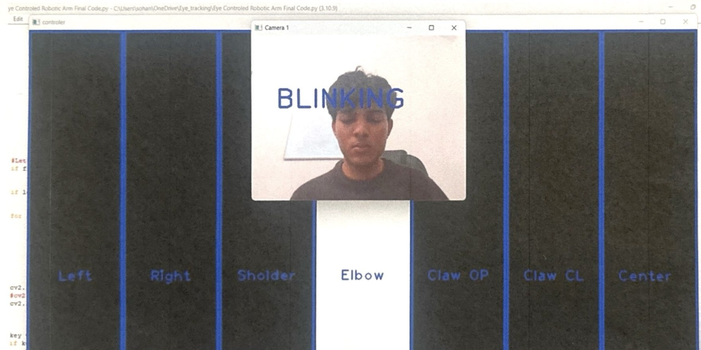

HIGH SCHOOL ENGINEERING PROJECT
Eye-Controlled Prosthetic Arm
A low-cost prosthetic arm prototype designed to provide hands-free movement through eye-based control using Python, Arduino, servo motors, and 3D-printed components.

OVERVIEW
Hands-Free Prosthetic Arm Control
The goal of this project was to explore a hands-free method of controlling a prosthetic arm for individuals with limited limb movement, including people affected by ALS.
Instead of requiring direct hand or arm movement, the system uses eye movement as the user's control input. That input is processed by software and converted into commands that control the prosthetic arm.
MY ROLE
Independent Design, Programming & Build
I independently designed, built, programmed, and tested the complete prosthetic arm prototype.
The project required integration of Python, Arduino, servo motors, electronic components, and 3D-printed mechanical parts into one functioning system.
CONTROL SYSTEM
Eye Movement → Software → Arm Motion
Eye movement provides the hands-free control input to the system. Software interprets the user's eye position and converts it into commands that can be sent to the prosthetic arm.
The Arduino then controls the servo motors responsible for producing the physical movement of the arm.
Eye Input
Eye movement provides the hands-free control input.
Python
Python processes the eye-based input and determines the user's intended command.
Arduino
The Arduino receives the control information and converts it into servo commands.
Servo Motion
Servo motors actuate the prosthetic arm in response to the user's commands.
COST-FOCUSED DESIGN
Exploring a More Affordable Approach
One of the main objectives of the project was to investigate whether a functional prosthetic prototype could be developed at a significantly lower cost than many existing prosthetic systems.
The prototype cost approximately $154 to build, excluding the computer and 3D printer that I already had available.
I estimate that a more refined version with additional hardware, increased durability, and further development would require approximately $600 in components.
PHOTO GALLERY
Development & Final Prototype


SOFTWARE
Eye-Control GUI
This video explains how the graphical user interface works and how eye movement is interpreted by the software before commands are sent to the prosthetic arm.
DEMONSTRATION
Eye-Controlled Prosthetic Arm in Operation
The demonstration shows the completed prototype responding to eye-based commands and translating those commands into servo-driven arm movement.
RESULT
Functional Hands-Free Prototype
The completed prototype demonstrated that eye-based input could be integrated with software processing, Arduino control, servo actuation, and 3D-printed components to produce hands-free prosthetic arm movement.
The project also allowed me to explore how accessible electronics and additive manufacturing could be combined to develop lower-cost assistive technology concepts.